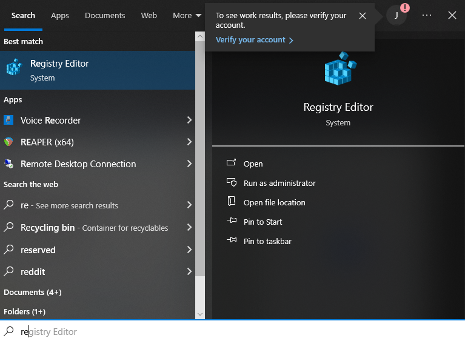
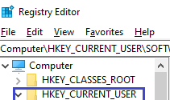
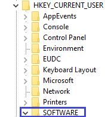
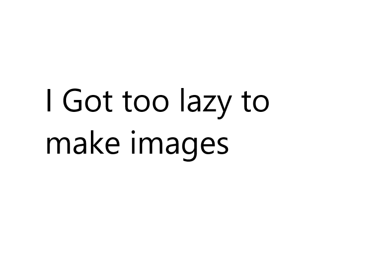

1. open registry editor 
2. go to HKEY_CURRENT_USER 
3. go to SOFTWARE 
4. then go to Another Axiom 
5. go to gorilla tag
6. find the files you want to edit
1. find blueValue_h(some numbers)
2. delete everything and put in 16 "F"'s it should look like FF FF FF FF FF FF FF FF
3. repeat the same for greenValue_h(some numbers) and redValue_h(some numbers)
1. find turnFactor_h(some numbers)
2. edit this so it will be correct for you
1. find tutorial_h(some numbers)
2. on the side edit from true. to false.
3. find didTutorial_h(some numbers)
4. on the side edit from done. to not done.